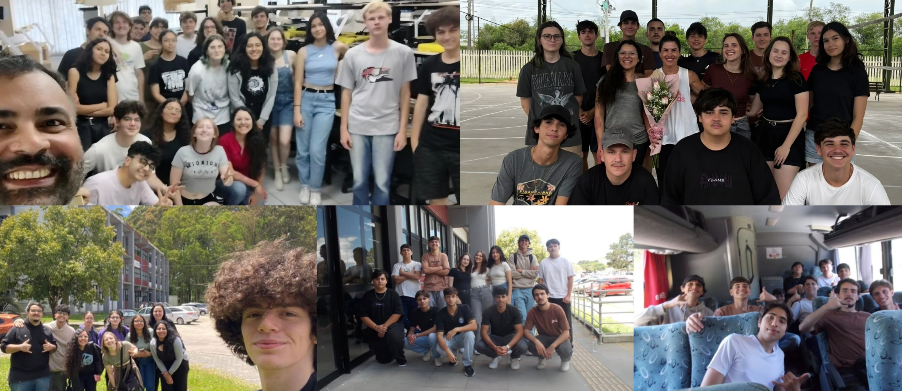

SOBRE NÓS
QUEM SOMOS?
Somos uma turma do 4º ano do Curso Técnico em Informática Integrado de 2026 do Instituto Federal de Educação, Ciência e Tecnologia Sul-rio-grandense (IFSul) câmpus Camaquã.

MISSÃO:
Compartilhar os problemas, diagnósticos e soluções que tivemos conhecimento durante nossa prática no laboratório de montagem e manutenção de computadores, com o objetivo de auxiliar no ganho de conhecimento das turmas posteriores à nossa e de demais pessoas que encontrem nosso material.
VISÃO:
Tornar-se uma turma lembrada por ajudar na jornada de próximas turmas de informática do nosso câmpus.